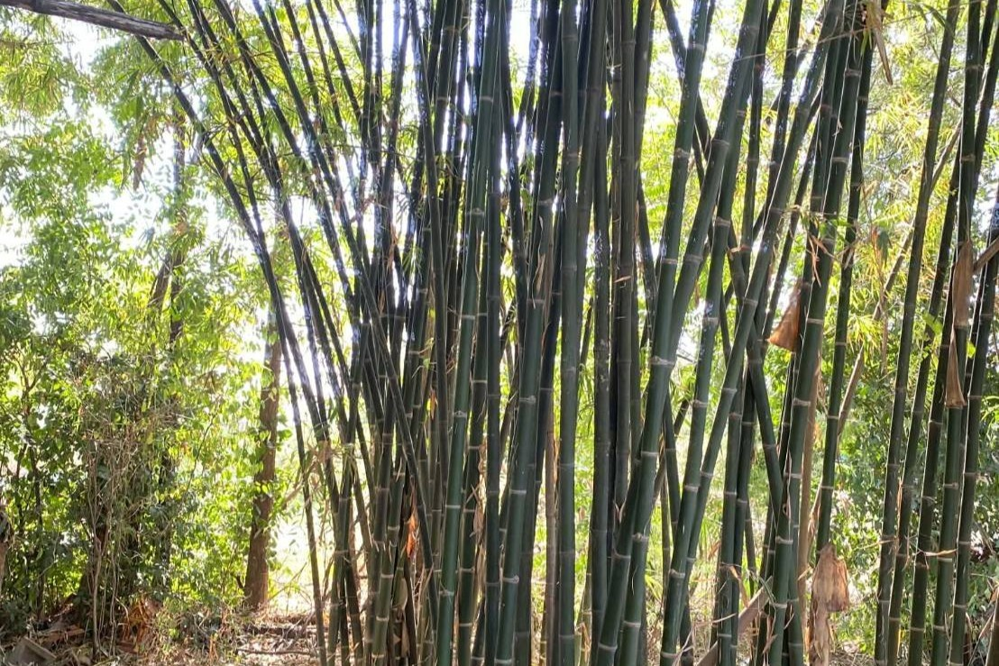
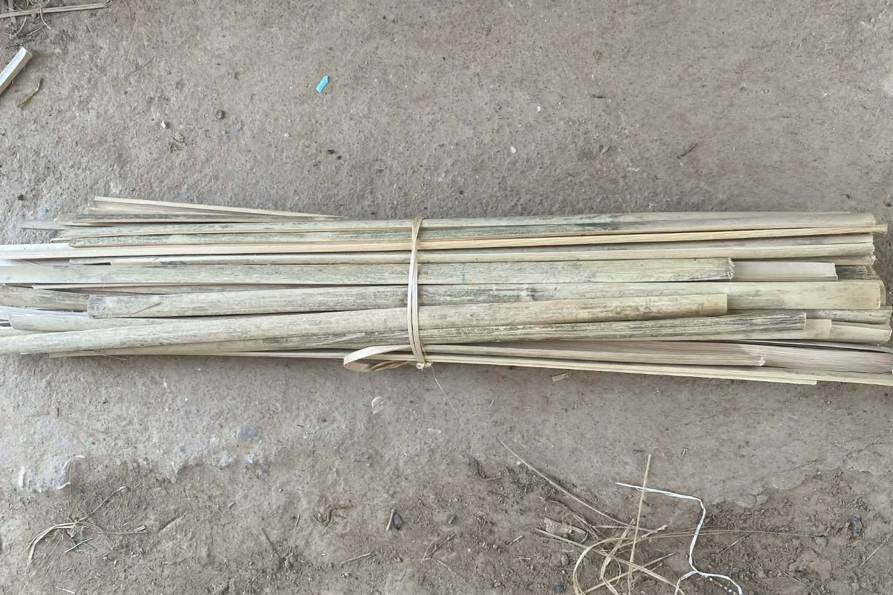
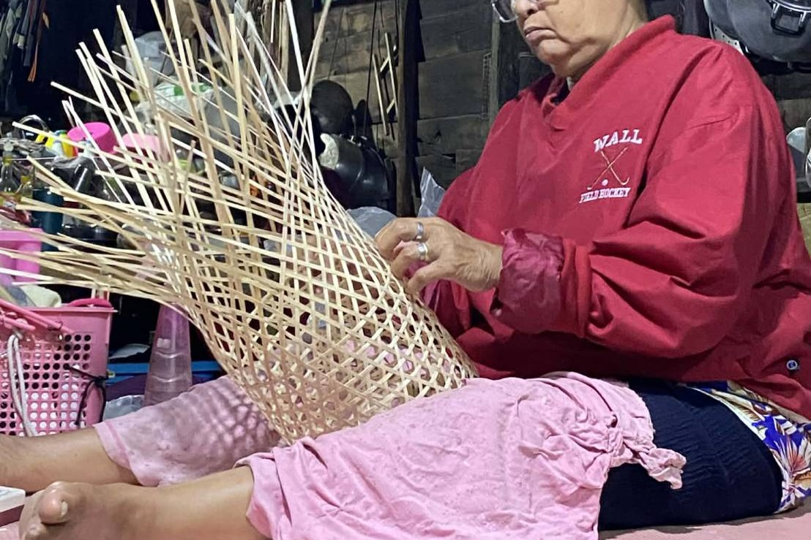
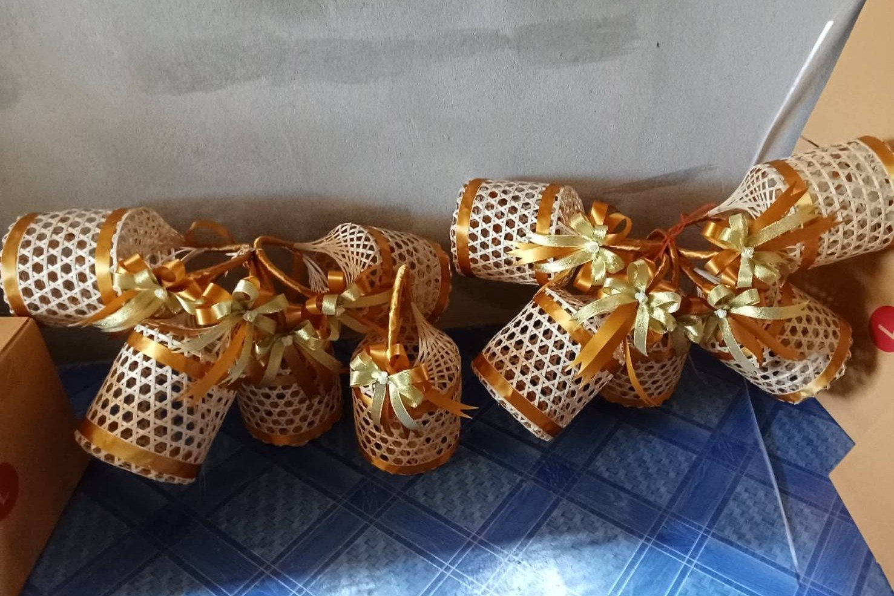

กระบวนการผลิตชะลอมสานจากไม้ไผ่ ที่อาศัยความประณีตและภูมิปัญญาท้องถิ่น

เลือกไม้ไผ่ที่มีอายุเหมาะสม ไม่อ่อนหรือแก่จนเกินไป เพื่อนำมาใช้เป็นวัตถุดิบหลักในการสาน ซึ่งจะทำให้ชะลอมมีความแข็งแรงและทนทาน

นำไม้ไผ่มาผ่าและเหลาให้เป็นเส้นขนาดเท่ากัน จากนั้นนำไปตากแดดเพื่อไล่ความชื้น ช่วยป้องกันเชื้อราและยืดอายุการใช้งาน

ใช้เส้นไม้ไผ่ที่เตรียมไว้ มาสานขึ้นรูปเป็นชะลอม โดยอาศัยความชำนาญและความละเอียด เพื่อให้ชะลอมมีรูปทรงสวยงามและแข็งแรง

ตรวจสอบความเรียบร้อยของชะลอม ตัดแต่งส่วนที่เกินออก และตรวจคุณภาพก่อนนำไปใช้งานหรือจำหน่าย